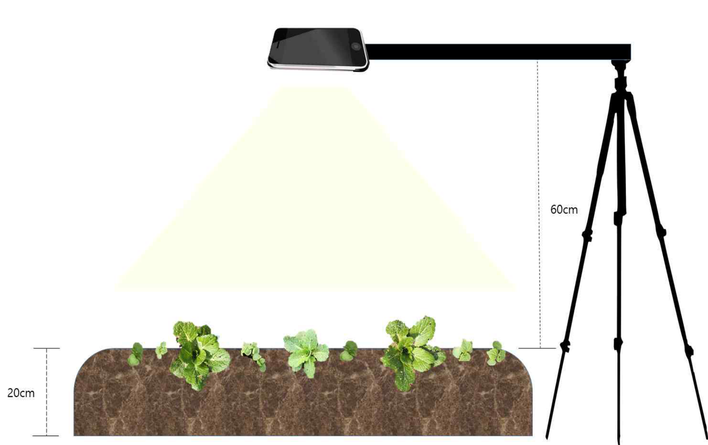
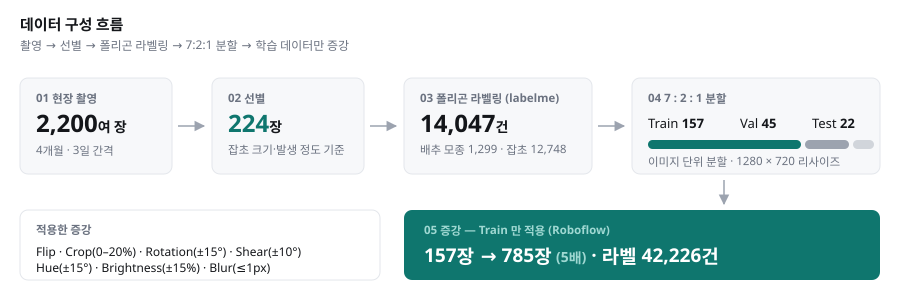
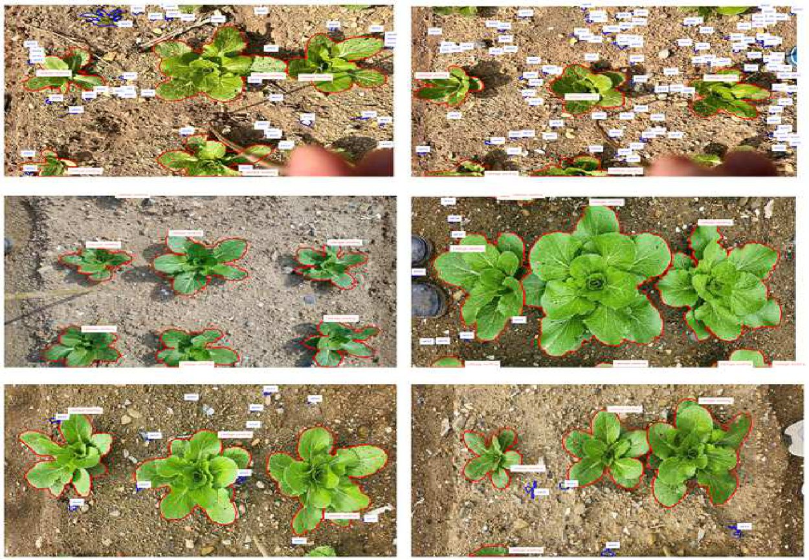
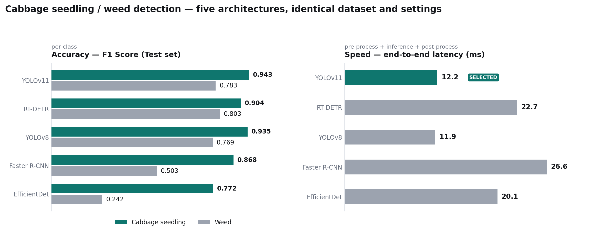
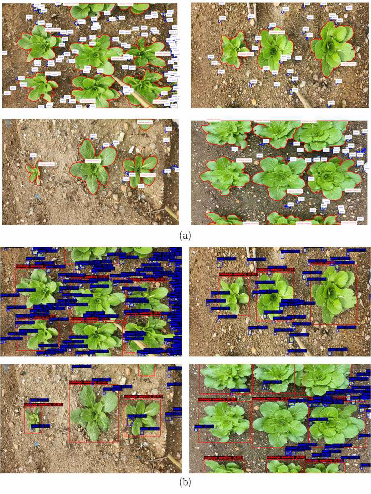
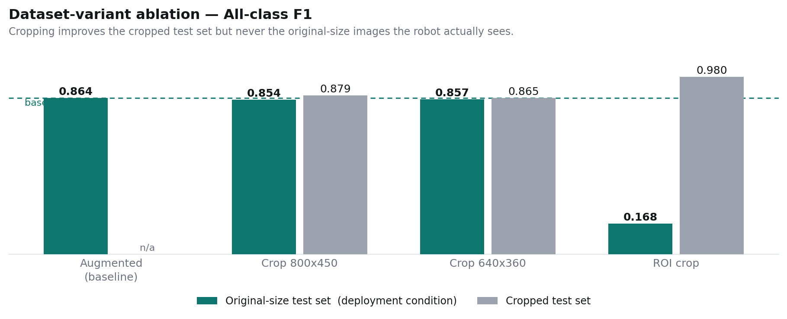
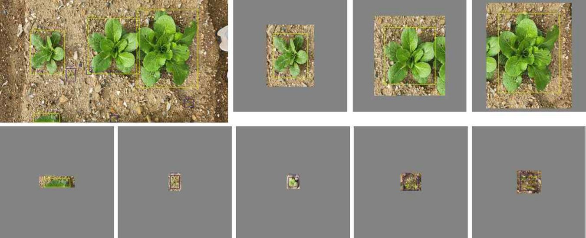
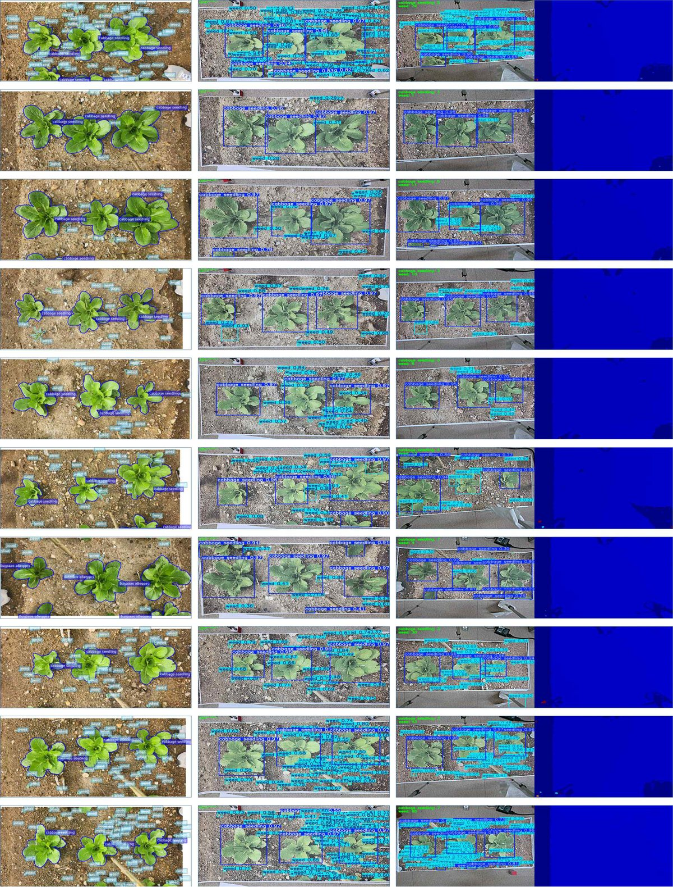
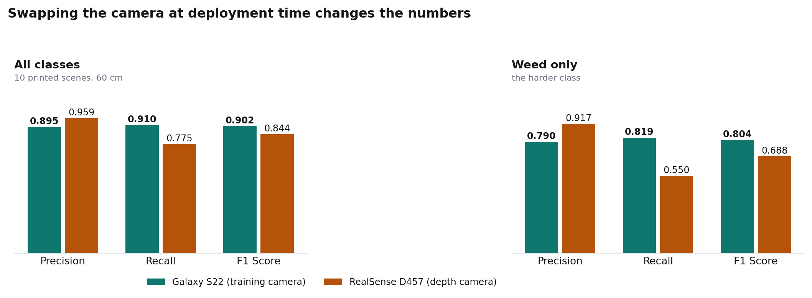

레이저 제초로봇에 탑재할 실시간 객체 탐지 모델을 개발한 과제로, 배추 모종과 잡초가 좁은 간격에 혼재한 조건에서 정확도와 처리 속도를 동시에 만족해야 했음. 구조가 다른 탐지 모델 5종을 동일 조건에서 비교해 YOLOv11을 최종 선정했고, 실제 로봇에 탑재한 뒤 공인 성능시험에서 목표인식률 95.7%(목표 90%)를 달성함.
배추 재배에서 제초는 노동력 비중이 큰 작업임(내국인 남성 농업 노동 중 제초·시비가 21.2%). 비닐 멀칭은 폐비닐 문제, 제초제는 토양·수질 잔류와 저항성 잡초 문제를 남김. 해외에서는 Carbon Robotics의 LASERWEEDER가 컴퓨터 비전으로 작물과 잡초를 실시간 구분해 레이저로 제거하는 방식을 상용화함.
국내 환경에 맞는 레이저 제초 로봇을 개발하는 과제에서, 로봇에 탑재할 인지 모델을 만드는 것이 본 연구의 목표였음. 배추 모종과 잡초가 좁은 간격으로 혼재하고, 오판하면 보존해야 할 작물을 태우게 되므로 정확도와 처리 속도를 동시에 만족해야 함.
2024년 3월 중순부터 6월 말까지 약 4개월간 전남 순천시 상사면 농장에서 파종 직후부터 3일 간격으로 직접 촬영. 총 2,200여 장을 확보한 뒤, 잡초의 크기와 발생 정도를 기준으로 224장을 선별해 라벨링함.
촬영 조건은 로봇의 실제 카메라 설치 위치를 기준으로 잡음 — 두둑 위 60cm(두둑 높이 20cm) 높이에 Galaxy S22 광각을 수직 배치, 4000×1848 해상도, 자연광. 한 장에 담기는 실제 지면 면적은 83×38cm(약 0.318 m²)이며, 하루 약 210포기를 70장으로 담음.
labelme로 배추 모종과 잡초를 폴리곤으로 라벨링 — 총 14,047건(배추 모종 1,299 / 잡초 12,748). 학습·검증·테스트를 7:2:1로 나누고, Roboflow로 Flip·Crop·Rotation(±15°)·Shear·Hue·Brightness·Blur를 적용해 학습 데이터를 5배(157장 → 785장, 라벨 42,226건)로 증강함.



구조가 다른 5종을 동일 데이터셋·동일 조건에서 학습·비교함 — YOLOv8n, YOLOv11n(1-stage anchor-free), RT-DETR-l(Transformer), EfficientDet-D1(BiFPN), Faster R-CNN(2-stage, ResNet50). Epoch 500·Early Stopping(patience 100)·batch 6, NVIDIA H100 ×2 환경.
평가는 Precision·Recall·F1·mAP@0.5·mAP@0.5:0.95와 함께, 전처리·추론·후처리를 모두 포함한 end-to-end latency를 측정함. 실시간 탑재가 목적이므로 정확도만으로는 판단할 수 없기 때문.

클래스별로 최우수 모델이 갈렸음. 잡초는 RT-DETR이 F1 0.803·mAP@0.5 0.822로 가장 높았고, 배추 모종은 YOLOv11이 F1 0.943·mAP@0.5 0.976로 가장 높았음.
잡초에서의 격차는 F1 0.020(0.803 vs 0.783)에 불과했지만, 추론 속도는 YOLOv11이 12.2ms · RT-DETR이 22.7ms로 1.86배 차이였음. 실시간 요건을 기준으로 YOLOv11을 최종 탑재 모델로 선정함.
EfficientDet-D1은 잡초 F1 0.242·mAP@0.5 0.058로 사실상 탐지에 실패했는데, 640×640 입력으로 리사이즈되면서 작은 객체 정보가 소실된 것으로 판단함.

작은 잡초의 인식률을 높이려고 두 가지 데이터셋 변형을 추가로 실험했고, 둘 다 채택하지 않았음.


크롭 테스트셋 성능만 보면 개선처럼 보이지만 평가셋이 실제 운용 조건과 달랐던 것이 원인이었고, 최종적으로 증강 데이터셋으로 학습한 YOLOv11을 유지함.
생육 시기 특성상 현장 재촬영이 불가능해, 데이터 이미지를 실물 크기(0.318 m²)로 출력한 뒤 실제 촬영 높이 60cm에서 카메라 2종으로 실시간 추론을 측정함.


학습 시점의 카메라와 배포 시점의 카메라가 다르면 성능이 달라진다는 것을 정량적으로 확인한 부분. 실제 로봇에 탑재할 센서를 고를 때 반드시 고려해야 하는 지점임.
선정한 YOLOv11 모델을 레이저 제초로봇 ROVERSE WR-1에 탑재하고, Intel RealSense D457 카메라와 NVIDIA Jetson AGX Orin 보드에서 실시간 추론하도록 구성함. 학습 데이터를 찍은 카메라와 실제 탑재 장비가 다르다는 점이 가장 큰 위험 요소였음.
문제는 시험 자체가 없었다는 것임 — 해당 분야에는 인증 시험방법이 존재하지 않아, 검정기관과 협의해 시험방법부터 제정하고 평가 항목과 합격 기준을 함께 정의함.
한국농업기술진흥원 입회 성능시험 결과 인공지능 목표인식률 95.7%로 목표치 90%를 충족함(성적서 24-KOATMP-236). 연구실 지표가 아니라 공인기관 시험으로, 장비가 바뀌어도 목표 성능이 유지되는 것을 확인한 부분임.
배추 모종 F1 0.943 / mAP@0.5 0.976, 잡초 F1 0.783 / mAP@0.5 0.802, end-to-end 12.2ms의 YOLOv11 모델을 레이저 제초 로봇 인지 모듈로 확정하고, 공인 성능시험에서 목표인식률 95.7%로 검증함.
한계도 명확함 — 잡초 성능이 배추 모종보다 뚜렷하게 낮음. 잡초는 종이 다양하고 형태가 불규칙하며 크기가 작아 선행 연구 대비로도 낮은 편임. 원본 이미지와 크롭 이미지를 혼합한 학습, 그리고 실제 포장에서의 실시간 검증이 후속 과제로 남음.